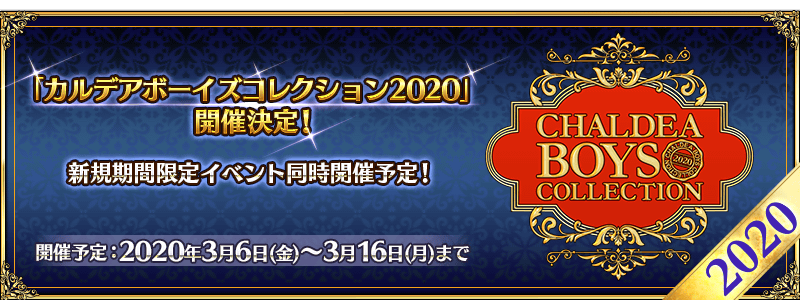

【3月4日(三) 17:00追記】
預定自2020年3月6日(五) 17:00舉辦「迦勒底男性精選2020」！
在下述介紹一部份情報。
※本頁面皆為開發中圖片。會有與實際圖片相異的情況。
◆預定舉辦◆
2020年3月6日(五) 17:00～3月16日(一) 11:59
在宣傳活動期間中登入的話，贈送可交換1張「迦勒底男性精選2020」期間限定概念禮裝的「CBC2020特別邀請函」！
本次特別先行公開一部份的插圖！
【3月4日(三) 17:00追記】
關於其他概念禮裝及期間限定聖晶石召喚的詳情，會在2020年3月5日(四) 17:00公開，敬請期待！
【3月4日(三) 17:00圖片更新】
◆交換條件◆
滿足以下的條件的御主交換才能用「CBC2020特別邀請函」交換贈送對象概念禮裝
・通過「特異點F 炎上汙染都市 冬木」
【3月4日(三) 17:00追記】
配合「迦勒底男性精選2020」的舉辦，也預定同時舉辦期間限定活動「艾尤的春風 ～魔女與愉快夥伴與嶄新冒險～」！
詳情請等待續報。
◆活動預定舉辦◆
2020年3月6日(五) 17:00～3月16日(一) 11:59
◆活動參加條件◆
滿足以下條件的御主才能參加
・通過「特異點F 炎上汙染都市 冬木」